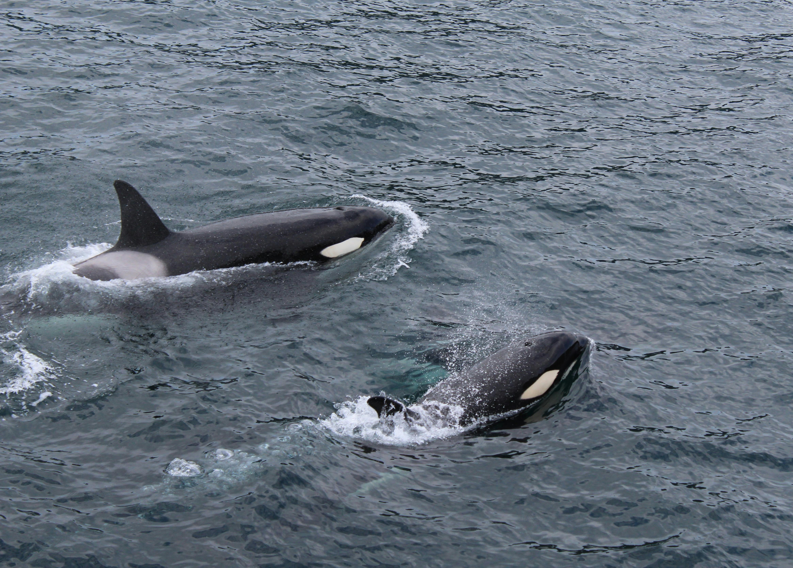

Orcas
The Greatest Ocean Predator
Orcas, often called killer whales, are powerful marine mammals found in oceans all around the world. They live in highly social groups known as pods, which can range from just a few individuals to dozens working together in harmony. Within these pods, orcas communicate through a variety of clicks, whistles, and pulsed calls, creating a unique language that differs between groups. Their striking black-and-white coloration makes them one of the most recognizable species of the sea, and their intelligence has fascinated scientists and storytellers alike.
Despite their nickname, orcas are not whales but the largest members of the dolphin family. They are apex predators, capable of hunting fish, seals, and even large whales through coordinated strategies. Orcas adapt their hunting techniques depending on their environment, showcasing a remarkable cultural transmission of knowledge from one generation to the next. They can be seen breaching the water’s surface, slapping their tails, or gliding gracefully beneath the waves, reminding us of the beauty and complexity of life in the ocean.

| Feature | Description | Extra Details |
|---|---|---|
| Scientific Name | Orcinus orca | Belongs to the dolphin family (Delphinidae). |
| Social Groups | Live in pods of up to 40 individuals | Pods often have complex family structures. |
| Diet | Apex predators that hunt fish, seals, and even whales | Hunting strategies vary by region and culture. |
| Communication | Use clicks, whistles, and pulsed calls | Each pod has unique “dialects” of vocalizations. |
| Range | Found in all oceans, from Arctic to Antarctic | Among the most widely distributed mammals. |